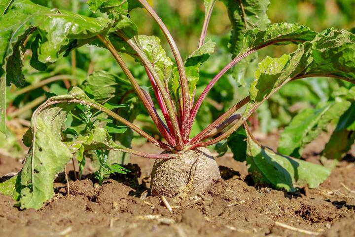
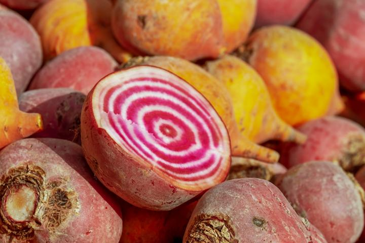
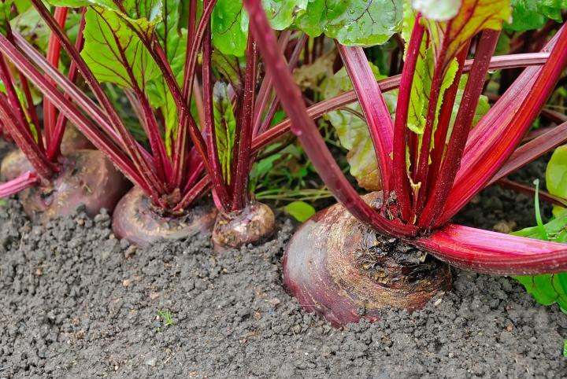

Beets—or “beet roots”—are a colorful, cool-season crop that is easy to grow from seed in well-prepared soil and grows quickly in full sun.
They are a great choice for northern gardeners because they can survive frost and near-freezing temperatures. This also makes them great as a fall crop.
If you are a beginner, look for bolt-resistant varieties, which have less of a chance of bolting (maturing too quickly) in warm weather. There are many different varieties of beets, showcasing deep red, yellow, white, or striped roots of different shapes.
Beet roots can be harvested from the time they’re about the size of a golf ball to the size of a tennis ball; larger roots may be tough and woody. Plus, beet greens have a delicious and distinctive flavor and hold even more nutrition than the roots!
Planting
Choose a planting site that gets full sun. Beets should ideally receive at least 6 hours of direct sunlight per day.
Beets grow best in well-prepared, fertile soil, but will tolerate average to low soil fertility. A soil pH between 6.0 and 7.0 is best and slightly alkaline (7.0+) soils can be tolerated. Beets will not tolerate acidic soils (pH below 6.0). To allow the round beet roots to develop properly, soil should be free of rocks and other obstacles.
Avoid planting beets where Swiss chard or spinach has recently been grown, as they are cousins of beets and are susceptible to similar pests and diseases.
When to Plant Beets
Start your first round of beets in early spring, as soon as the soil is workable. Make successive plantings every 2 to 3 weeks until mid-summer.
Successive plantings are possible through summer as long as daytime temperatures don’t exceed 75°F (24°C).
In soil that’s at least 50°F (10°C), germination takes place in 5 to 8 days. In soil colder than that, germination may take 2 to 3 weeks.
Tip: To speed up germination, or when planting in areas with low moisture and rainfall, soak the seeds in water for 24 hours before planting.
For a fall harvest, sow beet seeds from mid-summer through early fall, starting about 4 to 6 weeks before your first fall frost.
Winter crops are a definite possibility in Zone 9 and warmer. Plant beets in early to late fall for a winter harvest.

How to Plant Beets
We prefer to sow beets directly in the garden so that we don’t have to disturb their roots. However, beets—unlike many root crops—do generally tolerate being transplanted while still young. Since they are cold tolerant, beets typically have no trouble being started outdoors, though.
Sow seeds ½-inch deep and 1 to 2 inches apart in rows that are about 12 to 18 inches apart. After sowing, cover the seeds with a thin layer of soil.
Make sure soil remains moist for optimal germination. Soak seeds for 24 hours prior to planting to speed up germination.
Check out this video to learn how to plant beets:
growing
Each wrinkled beet “seed” is actually a cluster of 2 to 4 seeds, so you will need to thin the young plants to 3 to 4 inches apart once the greens get to be about 4 to 5 inches tall. This allows their roots to grow to their proper size.
Tip: When thinning, don’t pull up the plants, as you may accidentally disturb the roots of the beets you want to keep. Instead, just snip or pinch off the greens (and eat them).
Mulch and then water regularly with about 1 inch of water per square foot per week. Beets need to maintain plenty of moisture in order to grow well.
Weed as needed, but be gentle around young plants; beets have shallow roots that are easily disturbed.
Consider covering beets with a row cover to prevent pests like leaf miners from attacking the plants’ leaves.
Supplementing with extra fertilizer is usually not necessary. If you do fertilize, go easy on nitrogen; excess will cause an abundance of greens but tiny bulbs beneath the soil.
recommended varieties
Beets come in quite a few shapes and a rainbow of colors. Deep red is typical, but yellow and white varieties are also available, as are red-white ringed ones (pictured below)!
‘Chioggia’: red skin; when sliced open, reveals red and white concentric rings.
‘Detroit Dark Red’: Sturdy, traditional variety. Round, red root.
‘Formanova’: Long, cylindrical beets that grow in the same fashion as carrots . Excellent for canning.
Yellow varieties include ‘Bolder’ or ‘Touchstone Gold’.
White varieties include ‘Avalanche’ or Dutch heirloom ‘Albino’.

harvesting
Days to maturity tend to be between 55 and 70 for most varieties. In other words, plan to harvest beets about 2 months after planting.
Harvest roots when golf ball-size or larger; very large roots may be tough and woody.
Loosen the soil around the beet and gently pull it from the earth.
Harvest the beet greens at almost any time, beginning when thinning seedlings. Take one or two mature leaves per plant, until leaf blades are more than 6 inches tall and become tough. (Roots will not fully form without greens, so leaving some is necessary for proper development.)

How to Store Beets
Fresh beets can be stored in the refrigerator for 5 to 7 days.
Tip: Clipping the tops off beets will keep them fresher for longer. Leave about 1 inch of stem on each beet, and store the greens separately.
For long-term root cellar storage, make sure you brush off any soil clinging to the roots, then bury them in layers (but not touching) surrounded by dry sand or sawdust.
Store in a cool, dry place. An unheated closet might do, or put them in a cooler in your basement. Read more about a new way to store beets in the root cellar.
Sprouting is a sign of poor storage and leads to decay.
Beets can be frozen, canned, and pickled, too!
pests/diseases
Beet Root Pests and Diseases
Pest/Disease
Type
Symptoms
Control/Prevention
Cercospora leaf spot
Fungus
Cercospora prefers warm/humid conditions and damp nights. Many small brown spots with red-purple halos on leaves that enlarge and turn gray; centers of spots eventually fall out, leaving the halos.
Destroy infected plants; weed; avoid overhead watering; ensure good air circulation; rotate crops.
Cucumber mosaic virus
Virus
May include stunting, mottled green/yellow/white pattern or ringed spots on leaves; distorted leaf growth.
Destroy infected plants; choose resistant varieties and certified virus-free seed; use row covers; disinfect tools; weed; control aphids (carriers of CMV); use mulch.
Flea beetles
Insect
Numerous tiny holes in leaves—as if they’ve been hit by a shotgun.
Use row covers; mulch heavily; add native plants to invite beneficial insects.
Leafhoppers
Insect
White shed skins on leaf undersides (from nymph molting); stippling (many tiny spots) on leaves; “hopperburn” (leaves yellow/brown, curled, or stunted); reduced yield.
Knock nymphs off leaf undersides with strong spray of water; use row covers; monitor adults with yellow sticky traps; weed; destroy crop residue at season end.
Leaf miners
Insect
Meandering blisters in leaves caused by tunneling larvae.
Remove infested leaves; weed; use row covers; till soil early in season; rotate crops.
Trap by digging 2- to 4-inch-deep holes every 3 to 10 feet, fill with mix of germinating beans/corn/peas or potato sections as bait, cover with soil or a board, in 1 week uncover and kill collected wireworms; sow seeds in warm soil for quick germination; provide good drainage; remove plant debris; rotate crops.